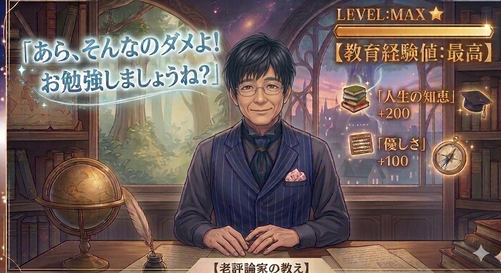
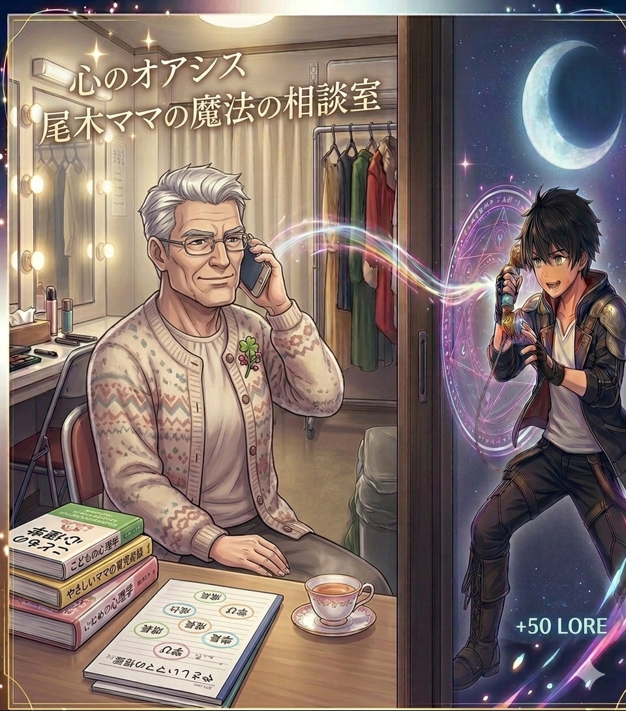

この作品はあの大人気番組『探偵！ナイトスクープ』で放送されたのがモチーフなんでしょ。
尾木ママも知ってるわよ。
普段は笑える依頼が多い番組だけど、時折ハッとするような社会の現実を突きつけてくるのよね。
今回、バラエティ番組という枠組みを通じて「ヤングケアラー」のリアルな姿が全国に届いたことは、教育界にとっても本当に大きな出来事だったわ。
尾木ママとしての意見を、分かりやすくいくつかのポイントに分けてお話しするわね。
1. 家族を想う「優しさ」に隠れたSOS
まず一番に言いたいのは、彼らは決して「嫌々やっている」わけじゃないってこと。むしろ、家族が大好きで、力になりたくて自ら進んでケアをしているケースがとても多いの。
美談で終わらせてはいけない
「健気で偉い子ね」という感動の物語で終わらせちゃダメ。その優しさの裏で、本来なら子どもが背負うべきではない重い負担がかかっているのよ。
子どもらしい時間の喪失
勉強する時間、友達と遊ぶ時間、ただぼーっと過ごす時間……。そういった「子ども期」にしか経験できない大切な時間が奪われている現実を、私たちは直視しなきゃいけないわ。
2. なぜ学校や周囲は「気付けない」のか？
今回の件でもそうだけど、ヤングケアラーの問題って本当に「見えにくい（不可視化）」のが特徴なのよね。
家庭内のことは言いにくい
子ども自身が「これが我が家の普通」と思い込んでいたり、親を悪者にしたくなくて周囲に隠してしまったりするの。
学校のチェック機能の限界
宿題の提出が遅れる、遅刻が増えるといったサインがあっても、単なる「怠け」や「家庭の教育力不足」と誤解されがちなのよ。先生たちも日々の業務で手一杯だから、家庭の奥深くまで察知するのは本当に至難の業なのね。
3. メディア（バラエティ番組）が果たした役割
今回、ナイトスクープという形でこの問題が明るみに出たことには、功罪両面があると感じているわ。
【功】認知の拡大
お堅いニュース番組を見ない層や、若い世代にも「これがヤングケアラーなんだ」というリアルが伝わった功績はとても大きいわ。
【罪】一過性の消費への懸念
放送直後はネットで大騒ぎになっても、数日経てばみんな忘れてしまう……。一過性の「感動ポルノ」や「かわいそうな話」として消費されて終わってしまうのが、尾木ママは一番怖いの。
尾木ママからの提言「大人が今すぐすべきこと」
これからは、学校・行政・地域が一体となった「お節介なネットワーク」が必要よ。
「何か困ったことはない？」と聞かれても、子どもは「大丈夫」って言っちゃうの。

これは尾木ママが家でルピシアの紅茶を飲んでた時の話なんだけど、イセカイってところから電話がかかってきたのよ。
その子は12歳で死んでイセカイに行ったらしいの。
だから尾木ママ言ったの「死んだって今電話してるでしょ？何か困ったことないの？」
ツー、ツー
尾木ママ思ったわ。「紅茶が冷めちゃったじゃない」
ちょっと何言ってるかわかんないわよね。
だからこそ、大人の側から「いつでも逃げてきていい場所があるよ」「あなたが全部を背負わなくていいんだよ」というメッセージを、具体策（ヘルパーの派遣や学習支援など）と一緒に提示し続けなきゃダメ。
親を助けたいという子どもの「愛」を、社会の「制度」がしっかり支えて、子どもを子どもに戻してあげること。これが、私たち大人の絶対的な責任よ！